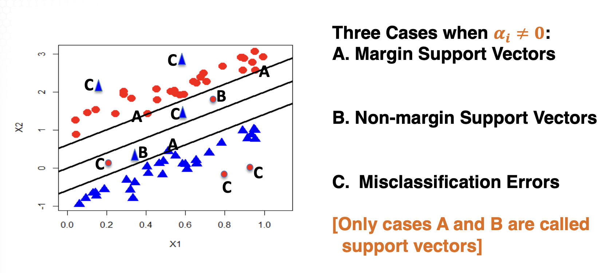

ISYE 7406: Data Mining and Statistical Learning
Table of Contents
1. Week 12: Advanced Supervised Learning
Support Vector Machine in Linear Scenario. (Week 11 is Spring Break)
1.1. Introduction to Support Vector Machines
1.1.1. Binary classification problem
- Data: \((Y_i, x_{i,1}, x_{i,2}, ..., x_{i,p}), i=1,2,...,n\) where \(Y_i\) is binary
- Linear classifier: classify binary response \(Y\) depending on whether \(h(x) = \beta_0 + \beta_1 x_1 + ... + \beta_p x_p = \beta_0 + \beta^T x\) is large or not
- Question: how to estimate \((\beta_0, \beta_1, ..., \beta_p)\) from the training data?
- Linear discriminant analysis
- testing hypothesis after modelling \(x_{i1}, x_{i2}, ..., x_{ip}\) as multivariate normal distribution \(\text{MVN}(\mu_i, \Sigma)\)
- Logistic regression
- maximum likelihood estimator after modelling the relationship between \(P(Y_i=1)\) and the function \(h(x)\)
- Support vector machine
- optimization-based, with \(Y_i \in {-1,1}\)
1.1.2. Toy motivating example
- Data: \((Y_i, X_{i1}, X_{i2})\) for \(i=1, ..., n=60\). Here, \(Y_i \in {-1,1}\) are class labels
True generative model:
\begin{equation} X_{i2} = \begin{cases} 2X_{i1} + 1 + \epsilon_i & \text{ if } Y_i=1 \\ 2X_{i1} - 1 + \epsilon_i & \text{ if } Y_i=-1 \\ \end{cases} \text{where }\epsilon_i \text{ are iid N}(0, 0.3^2) \end{equation}- Objective: Suppose we don't know the true generative model, how do we use the training data to predict the class?
1.1.3. Good separate line?

- If we want to separate two classes along the line \(X_2 + 2X_1 + c\), this yields the classifier of form \(\text{sign}(X_2 - 2X_1 - c)\)
- The two boundary lines are: \[ X_2 = 2X_1 + 0.607 \\ X_2 = 2X_1 - 0.590 \]
- The distance between the two boundary lines is \[ (0.607 + 0.590) / \sqrt{2^2+1} = 0.535 \]
1.1.4. Poor separation
What if we change the line direction; and instead, consider classifier of the form: \[ \text{sign}(X_2 - X_1 -c) \]
- The two boundary lines are thus: \[ X_2 = X_1 + 0.725 \\ X_2 = X_1 + 0.198 \]
- The distance between these 2 boundary lines is thus \[ (0.725-0.198) / \sqrt {1^2+1} = 0.373 \]
- The separation is thus smaller and likely leads to larger misclassification error on testing data
1.1.5. Margin maximization
- Support vector machine: main idea is to find a line direction that maximizes the margin of the training data
- Margin: the distance between the two boundary lines of two classes
1.1.6. Distance in 2 dimensions

- In the 2-dimensional plane, the distance from a point \((x_{1, \text{new}}, x_{2,\text{new}})\) is: \[ d = \frac{|\beta_0 - \beta_0^{*}|}{\sqrt{\beta_1^2 + \beta^2_2}} \]
1.1.7. Distance from point to hyperplane
In the \(R^{\mathbb{p}}\) space, the distance from a point \[ x_\text{new} = (x_{1, \text{new}}, x_{2, \text{new}}, ..., x_{\text{p, new}})^T \] to thy hyperplane \[ \beta_0 + \beta_1 x_1 + \beta_2 x_2 + ... + \beta_p x_p = 0 ~ ~ ~ \text{i.e.: }\beta_0 + \beta^T x = 0 \] is: \[ d = \frac{|\beta_0 + \beta_1 x_{1, \text{new}} + \beta_2 x_{2,\text{new}} + ... + \beta_p x_{p, \text{new}}|}{\sqrt{\beta^2_1 + \beta^2_2 + ... + \beta^2_p}} \\ = \frac{|\beta_0 + \beta^T x_{\text{new}}}{|\beta|} \]
1.1.8. Distance between hyperplanes
- In the \(R^{\mathbb{p}}\) space, the distance between two hyperplanes \[ \beta_0 + \beta_1 x_1 + \beta_2 x_2 + ... + \beta_p x_p = c_1 ~ ~ ~ \text{i.e.: }\beta_0 - c_1 + \beta^T x = 0 \\ \beta_0 + \beta_1 x_1 + \beta_2 x_2 + ... + \beta_p x_p = c_2 ~ ~ ~ \text{i.e.: }\beta_0 - c_2 + \beta^T x = 0 \] is \[ d = \frac{|c_1 - c_2|}{\sqrt{\beta^2_1 + \beta^2_2 + ... + \beta^2_p}} = \frac{|c_1 - c_2|}{|\beta|} \]
- In the special case of \(c_1 = -1\) and \(c_2 = 1\), the margin or distance of the two hyperplanes is \[ d = \frac{|-1-1}{\sqrt{\beta^2_1 + \beta^2_2 + ... + \beta^2_p}} = \frac{2}{|\beta|} \]
1.2. Maximum Margin Optimization for SVM
11.1.2
1.2.1. Linear classification
- Training dataset: - Data: \((Y_i, x_{i,1}, x_{i,2}, ..., x_{i,p}), i=1,2,...,n\) with \(Y_i \in {-1,1}\)
Linear classification: find the linear function \[ h(x) = \beta_0 + \beta_1 x_1 + \beta_2 x_2 + ... + \beta_p x_p = \beta_0 + \beta^T x \] and predict the binary response of any new data by:
\begin{equation} \text{sign} \big( h ( x ) \big) = \text{sign} \big( \beta_{0}+\beta^{T} x \big)= \begin{cases} -1 & \text{ if } \beta_0+\beta^{T} x \leq 0 \\ 1 & \text{ if } \beta_0+\beta^{T} x > 0 \end{cases} \end{equation}- Different methods to estimate \(\beta_0\) and \(\beta\) from training data:
- Linear discriminant analysis
- Logistic regression
- Support vector machine (when linearly separable)
1.2.2. Linear SVM

- Linear SVM in the linearly separable scenario
- Given the direction \(\beta = (\beta_1, \beta_2, ..., \beta_p)\), there are 3 lines / hyperplanes of the form \[ \beta_0 + \beta_1 x_1 + \beta_2 x_2 + ... + \beta_p x_p = 0 \] Not unique, e.g. multiplying 3 both sides
- For uniqueness, we assume two boundary lines of two classes are defined by \[ \beta_0 + \beta_1 x_1 + \beta_2 x_2 + ... + \beta_p x_p = - 1 \\ \beta_0 + \beta_1 x_1 + \beta_2 x_2 + ... + \beta_p x_p = 1 \]
1.2.3. Margin computation
 Margin =
\[
\frac{2}{\parallel\beta\parallel} =
\frac{2}{\sqrt{\beta^2_1 + ... + \beta^2_p}}
\]
Margin =
\[
\frac{2}{\parallel\beta\parallel} =
\frac{2}{\sqrt{\beta^2_1 + ... + \beta^2_p}}
\]
1.2.4. Maximum margin optimization
Consider the scenario when the training data are linearly separable.
- Linear SVM classifier: \[ \hat{Y} = \text{sign}(\beta_0 + \beta_1 x_1 + \beta_2 x_2 + ... + \beta_p x_p) \]
- Objective: maximize the margin \[ \frac{2}{\parallel\beta\parallel} = \frac{2}{\sqrt{\beta^2_1 + ... + \beta^2_p}} \]
- This translates to low prediction error on new data in test data
1.2.5. Constraints for SVM
- Linear SVM classifier:
- Constraints: classify all training data correctly in the scenario when the training data is linearly separable:
- When \(Y_i = -1 \rightarrow \beta_0 + \beta^T x_i \le -1\)
- When \(Y_I = 1 \rightarrow \beta_0 + \beta^T x_i \ge 1\)
- The constraints can be written simply as: \[ Y_i(\beta_0 + \beta^T x_i) \ge 1 \text{ for all }i=1,2,...,n \]
- Constraints: classify all training data correctly in the scenario when the training data is linearly separable:
1.2.6. Mathematical formulation
Formula of SVM in the scenario when training data are linearly separable:
- Problem 0: find the linear function, or hyperplane below \[ h(x) = \beta_0 + \beta_1 x_1 + \beta_2 x_2 + ... + \beta_p x_p = \beta_0 + \beta^T x \] that maximizes margin: \[ \max_{\beta, \beta_0} \frac{2}{\parallel \beta \parallel} \] subject to the constraint on classifying training data well: \[ Y_i(\beta_0 + \beta^T x_i) \ge 1 \text{ for all} i=1,2,...,n \]
1.2.7. A simplified formulation
In the scenario when training data are linearly separable:
- Problem 1 (Primal form): Find the linear function, or hyperplane, that minimizes the quadratic objective function \[ \min_{\beta, \beta_0} (\frac{1}{2} \parallel \beta \parallel^2) \] subject to the linear constraints \[ Y_i(\beta_0 + \beta^T x_i) \ge 1 \text{ for all} i=1,2,...,n \]
1.2.8. Constrained optimization
By Lagrange multipliers, we reformulate the constrained primal problem into (unconstrained) dual space.
- Problem 2: find \((\beta_0, \beta)\) that minimizes the objective function \[ g = \frac{1}{2} \parallel \beta \parallel^2 - \sum^n_{i=1} \lambda_i [Y_i (\beta_0 + \beta^T x_i) -1] \] where \(\lambda_i \ge 0\) are the lagrange multipliers
- This is a quadratic optimizaton problem which can be solved conveniently. This gives the SVM in the linearly separable scenario.
1.3. SVM for Linearly Separable
11.1.3
1.3.1. Linear SVM
- Data: \((Y_i, x_{i,1}, x_{i,2}, ..., x_{i,p}), i=1,2,...,n\) with \(Y_i \in {-1,1}\)
- Support vector machine: predict \(\hat{Y} = \text{sign}(\beta_0 + \beta_1 x_1 + \beta_2 x_2 + ... + \beta_p x_p)\)
- In the linearly separable scenario, we assume two boundary hyperplanes are \[ \beta_0 + \beta_1 x_1 + \beta_2 x_2 + ... + \beta_p x_p = - 1 \\ \beta_0 + \beta_1 x_1 + \beta_2 x_2 + ... + \beta_p x_p = 1 \]
1.3.2. Maximum margin optimization
Maximum margin optimization formulation of SVM when the training data are linearly separable.
- Problem 1 (Primal form): Find the linear function (or hyperplane) that achieves \[ \max{{\beta_0, \beta}} \frac{2}{\parallel \beta \parallel} \] i.e. \[ \min_{\beta_0, \beta} (\frac{1}{2} \parallel \beta \parallel^2) \] subject to the constraints on classifying the training data well: \[ Y_i (\beta_0 + \beta^T x_i) \ge 1 \text{ for all }i=1,2,...,n \]
1.3.3. Unconstrained optimization
By Lagrange multipliers, we reformulate the constrained primal problem into unconstrained dual space.
- Problem 2: find \(\beta_0, \beta\) that minimizes the objective function \[ g = \frac{1}{2} \parallel \beta \parallel^2 - \sum^n_{i=1} \lambda_i [Y_i (\beta_0 + \beta^T x_i) -1] \] where \(\alpha_i \ge 0\) are the Lagrange multipliers
- Let us present some technical details on this unconstrained quadratic optimization problem
1.3.4. Local minimum
- Taking derivatives of \[ g = \frac{1}{2} \parallel \beta \parallel^2 - \sum^n_{i=1} \lambda_i [Y_i (\beta_0 + \beta^T x_i) -1] \] yields \[ \frac{\partial g}{\partial \beta_0} = -\sum^n_{i=1} \alpha_i Y_i \\ \frac{\partial g}{\partial \beta} = \beta - \sum^n_{i=1} \alpha_i Y_i x_i \]
- Thus a local minimum must satisfy \[ \sum^n_{i=1} \alpha_i Y_i = 0 \text{ and } \beta = \sum^n_{i=1} \alpha_i Y_i x_i \]
1.3.5. KKT necessary condition
- Karush-Kuhn-Tucker (or KKT) necessary condition for local minima: tat the point of the solutions the product between dual variables and constraints has to vanish
- For our objective function
\[
g = \frac{1}{2} \parallel \beta \parallel^2 - \sum^n_{i=1} \lambda_i [Y_i (\beta_0 + \beta^T x_i) -1]
\]
by KKT, there exists \((\alpha_1^* ..., \alpha_n^*)\), called KKT multiplier, such that:
- \(\alpha_i^{*} = 0\) whenever \(Y_i(\beta_0 + \beta^T x_i) \gt 1\)
- \(\alpha_i^{*} \gt 0\) only if \(Y_i (\beta_0 + \beta^T x_i) = 1\) i.e. \(\beta_0 + \beta^T x_i = Y_i \in \pm 1\)
- The vectors \(x_i\) for which \(\alpha_i^{*} > 0\) are called support vectors as they belong to the boundary hyperplanes
1.3.6. Objective function in dual space
Plugging \(\sum^n{i=1} \alpha_i Y_i = 0\) and \(\beta = \sum^n_{i=1} \alpha_i Y_i x_i\) into the objective function \[ g_{\text{dual}} = \frac{1}{2} \parallel \beta \parallel^2 - \sum^n_{i=1} \lambda_i [Y_i (\beta_0 + \beta^T x_i) -1] \]
\[ = {\frac{1} {2}} \sum_{i=1}^{n} \sum_{j=1}^{n} \alpha_{i} \alpha_{j} Y_{i} Y_{j} x_{i}^{T} x_{j}-\beta_{0} \sum_{i=1}^{n} \alpha_{i} Y_{i}-\sum_{i=1}^{n} \sum_{j=1}^{n} \alpha_{i} \alpha_{j} Y_{i} Y_{j} x_{i}^{T} x_{j}+\sum_{i=1}^{n} \alpha_{i} \]
\[ = \sum_{i=1}^{n} \alpha_{i}-\frac{1} {2} \sum_{i=1}^{n} \sum_{j=1}^{n} \alpha_{i} \alpha_{j} Y_{i} Y_{j} x_{i}^{T} x_{j} \]
1.3.7. Dual space formulation of SVM
- Problem 3: Find the \(\alpha_i\) that minimizes
\[
g=\frac{1} {2} \sum_{i=1}^{n} \sum_{j=1}^{n} \alpha_{i} \alpha_{j} Y_{i} Y_{j} x_{i}^{T} x_{j}-\sum_{i=1}^{n} \alpha_{i}
\]
subject to these 2 families of constraints
\[
\sum_{i=1}^{n} \alpha_{i} Y_{i}=0 \quad \text{and} \quad\alpha_{i} \geq0, \forall i=1, \cdots, n
\]
- Standard quadratic programming algorithms can solve the \(\alpha_i\) 's
1.3.8. The SVM classifier
Once we determine the \(\alpha_i\), we have
- \(\widehat{\beta} = \sum^n_{i=1} \alpha_i Y_i x_i\) which is a p-dimensional vector
- By KKT, for \(\alpha_i \ne 0\), we have \(Y_i (\beta_0 + \beta^T x_i)=1\). Multiplying both sides by \(Y_i \in {-1,1}\) we have \(\widehat{\beta_0} = Y_i - \beta^T x_i\)
Since most \(\alpha_i\) are 0, the SVM classifier can be rewritten as
\[ h(x)=\text{sign}\big( \widehat{\beta}_{0}+\widehat{\beta}^{T} \boldsymbol{x} \big)=\text{sign} \left( \widehat{\beta}_{0}+\sum_{i=1}^{n} \alpha_{i} Y_{i} x_{i}^{T} \boldsymbol{x} \right) \]
\[ \widehat{\beta}_{0}+\sum_{j=1}^{| s |} \alpha_{s_{j}} Y_{s_{j}} x_{s_{j}}^{T} x \]
if we eliminate the non-zero terms
1.4. Slack variables for linearly non-separable
11.2.1
1.4.1. Linear classification
- Data: \((Y_i, x_{i,1}, x_{i,2}, ..., x_{i,p}), i=1,2,...,n\) with \(Y_i \in {-1,1}\)
Linear classification: find the linear function \[ h(x) = \beta_0 + \beta_1 x_1 + \beta_2 x_2 + ... + \beta_p x_p = \beta_0 + \beta^T x \] where we classify new data based on
\begin{equation} \text{sign} \big( h ( x ) \big) = \text{sign} \big( \beta_{0}+\beta^{T} x \big)= \begin{cases} -1 & \text{ if } \beta_0+\beta^{T} x \leq 0 \\ 1 & \text{ if } \beta_0+\beta^{T} x > 0 \end{cases} \end{equation}- It's desirable to find a classifier that maximizes margin, which translates to a lower prediction error on new test data
1.4.2. Linearly separable scenario
See 1.2.3
1.4.3. Linearly non-separable scenario
 What if we cannot perfectly classify training data?
What if we cannot perfectly classify training data?
1.4.4. Slack variable
- When the data are linearly non-separable, we can soften the margins by introducing slack variables in constraints
- To be more specific, when the hard constraints \[ Y_i (\beta_0 + \beta^T x_i) \ge 1 \] cannot be satisfied for all \(i\), we replace them by the soft constraint \[ Y_i (\beta_0 + \beta^T x_i) - + \xi_i \ge 0, ~ ~ \xi_i \ge 0 \] where the new \(\xi_i\) are the slack variables
1.4.5. Implication of slack variables
Let the slack variable \(\xi_i \ge 0\) be the smallest value satisfying the constraints \[ Y_i (\beta_0 + \beta^T x_i) - + \xi_i \ge 0 \] There are two scenarios:
- Inequality scenario
- \(Y_i (\beta_0 + \beta^T x_i) -1 + \xi_i \gt 0\) for all \(\xi_i \ge 0\). The smallest slack variable \(\xi_i =0\) and \(Y_i(\beta_0 + \beta^T x_i)>1\)
- Equality scenario
- \(Y_i(\beta_0 + \beta^T x_i) -1 + \xi_i = 0\) for some \(\xi_i \ge 0\). Then, \(Y_i(\beta_0+\beta^T x_i)=1-\xi_i\)
1.4.6. Equality scenario
There are 3 subcases for equality scenario \[ Y_i(\beta_0 + \beta^T x_i) -1 + \xi_i = 0 \] depending on the values of slack variables \(\xi_i \ge 0\):
- Margin support vectors (\(\xi_i=0\))
- we have \(Y_i(\beta_0+\beta^T x_i) =1 ~ \text{i.e. } \beta_0+\beta^Tx_i=Y_i\in\pm1\)
- Non-margin support vectors (\(0<\xi_i\le1\))
- we have \(Y_i(\beta_0+\beta^Tx_i)=1-\xi_i\ge0 ~ \text{i.e. }Y_i=\text{sign }(\beta_0+\beta^Tx_i)\)
- Misclassification errors (\(\xi_i\gt1\))
- since \(Y_i(\beta_0+\beta^T x_i)=1-\xi_i <0 ~ \text{i.e. } Y_i\ne \text{sign}(\beta_0+\beta^Tx_i)\)
1.4.7. Linearly non-separable scenarios
 \(Y_i(\beta_0+\beta^Tx_i)-1+\xi_i\ge0\)
\(Y_i(\beta_0+\beta^Tx_i)-1+\xi_i\ge0\)
1.4.8. Comparison of two scenarios
Comparison of SVM classifier between linearly separable and linearly non-separable scenarios:
- Hard constraint \(Y_i(\beta_0+\beta^Tx_i)\ge 1\) is replaced by soft constraint \(Y(\beta_0+\beta^Tx_i)-1+\xi_i\ge 0\) and \(\xi_i\ge 0\)
- Perfect classification for training data is replaced by misclassification error for training data \(\sum^n_{i=1}(\xi_i > 1)\)
- Mathematical formulation for SVM classifier in the linearly non-separable scenario needs to adjust the training error
- Optimization algorithms are similar.
1.5. Optimization problem for linearly non-separable
11.2.2
1.5.1. Three criteria in SVM
There are three criteria when evaluating linear SVM based on the linear function/hyperplane \(h(x)=\beta_0+\beta_1x_1+...+\beta_px_p = \beta_0+\beta^Tx\)
- Margin maximization
- \[ \max_{\beta,\beta_0}\frac{2}{\parallel\beta\parallel} ~ \text{ i.e. }\min_{\beta,\beta_0}(\frac{1}{2}\parallel\beta\parallel^2) \]
- Soft constraints on training data
- \[ Y_i(\beta_0+\beta^Tx_i)-1+\xi_i\ge0, ~ , \xi_i \ge 0, ~ \forall i=1,2,...,n \]
- Misclassification error on training data
- \[ \sum^n_{i=1}I(\xi_i>1) \]
1.5.2. Possible formulation?
(P1): find the linear function or hyperplane \[ h(x) = \beta_0 + \beta_1 x_1 + \beta_2 x_2 + ... + \beta_p x_p = \beta_0 + \beta^T x \] that minimizes an objective function to account for training error \[ \frac{1}{2} \parallel\beta\parallel^2 + C\sum^n_{i=1}I(\xi_i\gt 1) \] for some \(C>0\) subject to the soft constraints on the training data \[ Y_i(\beta_0+\beta^Tx_i)-1+\xi_i\ge0, ~ , \xi_i \ge 0, ~ \forall i=1,2,...,n \]
- Unfortunately, this is difficult to optimize as it is non-convex
- We can motivate another useful formulation
1.5.3. Key idea of new formulation
New formulation of SVM for linearly non-separable:
- (P2): find the linear function \(h(x)=\beta_0+\beta^Tx\) and \((\xi_1,...,\xi_n)\) that minimizes the objective function \[ \frac{1}{2} \parallel\beta\parallel^2 + C\sum^n_{i=1}\xi_i \] for some \(C>0\), subject to the soft constraints on training data \[ Y_i(\beta_0+\beta^Tx_i)-1+\xi_i\ge0, ~ , \xi_i \ge 0, ~ \forall i=1,2,...,n \] This is a constrained quadratic optimization data that is solvable
1.5.4. Constrained optimization
- By Lagrange multipliers, we reformulate the constrained primal problem into the unconstrained dual space with the objective function \[ g=\frac{1} {2} \| \beta\|^{2}+C \sum_{i=1}^{n} \xi_{i}-\sum_{i=1}^{n} \alpha_{i} \big[ Y_{i} \big( \beta_{0}+\beta^{T} x_{i} \big)-1+\xi_{i} \big]-\sum_{i=1}^{n} \delta_{i} \xi_{i} \] where \(\alpha_i \ge 0, \delta_i \ge 0\) are the Lagrange multipliers
- The optimal solution gives the SVM classifier in the linearly non-separable scenario
1.6. SVM for linearly non-separable
11.2.3
1.6.1. Linear SVM classification
Question: how does SVM classifier estimate the coefficients \((\beta_0,\beta)\) when the training data are linearly non-separable?
1.6.2. Optimization problem
In the linearly non-separable problem, the SVM classifier solves the following optimization problem: Problem (P2): find the linear function \(h(x) = \beta_0 + \beta^Tx\) and the slack variables \((\xi_1, ..., \xi_n)\) that minimizes the objective function \[ \frac{1}{2}\parallel\beta\parallel^2 + C\sum^n_{i=1}\xi_i \] for some \(C>0\) subject to the soft constraints \[ Y_i(\beta_0+\beta^Tx_i)-1+\xi_i\ge0, ~ , \xi_i \ge 0, ~ \forall i=1,2,...,n \] How to solve this optimization problem?
1.6.3. Constrained optimization
- By Lagrange multipliers, we reformulate the constrained primal problem into unconstrained dual space with the objective function \[ g=\frac{1} {2} \| \beta\|^{2}+C \sum_{i=1}^{n} \xi_{i}-\sum_{i=1}^{n} \alpha_{i} \big[ Y_{i} \big( \beta_{0}+\beta^{T} x_{i} \big)-1+\xi_{i} \big]-\sum_{i=1}^{n} \delta_{i} \xi_{i} \] where \(\alpha_i\ge0, \delta_i\ge0\) are the Lagrange multipliers
1.6.4. Derivatives on \((\beta_0,\beta)\)
\[ g=\frac{1} {2} \| \beta\|^{2}+C \sum_{i=1}^{n} \xi_{i}-\sum_{i=1}^{n} \alpha_{i} \big[ Y_{i} \big( \beta_{0}+\beta^{T} x_{i} \big)-1+\xi_{i} \big]-\sum_{i=1}^{n} \delta_{i} \xi_{i} \]
- Taking derivatives w.r.t. \((\beta_0,\beta)\) yields \[ \frac{\partial g} {\partial\beta_{0}}=-\sum_{i=1}^{n} \alpha_{i} Y_{i} \,, \qquad\frac{\partial g} {\partial\beta}=\beta-\sum_{i=1}^{n} \alpha_{i} Y_{i} x_{i} \]
- Thus a local minimum must satisfy \[ \sum_{i=1}^{n} \alpha_{i} Y_{i}=0 \quad{\text{and}} \ \ \beta=\sum_{i=1}^{n} \alpha_{i} Y_{i} x_{i} \] This is the same as those in the linearly separable scenario!
1.6.5. Derivatives on \(\xi_i\)
\[ g=\frac{1} {2} \| \beta\|^{2}+C \sum_{i=1}^{n} \xi_{i}-\sum_{i=1}^{n} \alpha_{i} \big[ Y_{i} \big( \beta_{0}+\beta^{T} x_{i} \big)-1+\xi_{i} \big]-\sum_{i=1}^{n} \delta_{i} \xi_{i} \]
- Taking derivatives w.r.t. \(\xi_i\) yields \[ \frac{\partial g}{\partial\xi_i} = C-\alpha_i-\delta_i \]
- Thus a local optimum satisfies \(\alpha_i + \delta_i = C \forall i=1,2,...,n\)
- This leads to a crucial new constraint on \(\alpha_i\) in the linearly non-separable scenario: \[ 0 \le \alpha_i \le C, ~ \forall i = 1, ..., n \]
1.6.6. New objective function?
\[ g=\frac{1} {2} \| \beta\|^{2}+C \sum_{i=1}^{n} \xi_{i}-\sum_{i=1}^{n} \alpha_{i} \big[ Y_{i} \big( \beta_{0}+\beta^{T} x_{i} \big)-1+\xi_{i} \big]-\sum_{i=1}^{n} \delta_{i} \xi_{i} \]
- Putting the relation \(\delta_i = C-\alpha_i \forall i=1,...,n\), the objective function is reduced to the form: \[ g=\frac{1} {2} \| \beta\|^{2}-\sum_{i=1}^{n} \alpha_{i} \big[ Y_{i} \big( \beta_{0}+\beta^{T} x_{i} \big)-1 \big] \] which is the same as before in the linearly separable scenario
- Plugging the fact \(\beta=\sum^n_{o=1} \alpha_i Y_i x_i\) yields the dual space formulation
1.6.7. Dual space formulation of SVM
The dual space formulation of SVM in the linearly non-separable scenario: Problem (P3): Find the \(\alpha_i\) that minimizes \[ g=\frac{1} {2} \sum_{i=1}^{n} \sum_{j=1}^{n} \alpha_{i} \alpha_{j} Y_{i} Y_{j} x_{i}^{T} x_{j}-\sum_{i=1}^{n} \alpha_{i} \] subject to the two families of constraints \[ \sum^n_{i=1} \alpha_i Y_i = 0 ~ \text{and} ~ 0 \le \alpha_i \le C, ~ \forall i=1,...,n \]
- This is the same as those of of the linearly separable scenario, except that there is an upper bound \(C\) on the \(\alpha_i\)
- Quadratic programming algorithms can be used to solve the \(\alpha_i\)
1.6.8. The SVM Classifier
Once we determined the \(\alpha_i\) for the linearly non-separable, we have
- \(\widehat{\beta} = \sum^n_{i=1} \alpha_i Y_i x_i\) and compute \(\widehat{\beta_0} = Y_i - \widehat{\beta}^T x_i\) from margin support
- Since most \(\alpha_i\) are 0, the SVM classifier can be rewritten as \[ \hat{Y} = \text{sign}(\hat{\beta_0}+\hat{\beta}^T x) = \text{sign}(\hat{\beta_0}+\sum^n_{i=1}\alpha_iY_ix_i^Tx) \\ = \text{sign}(\hat{\beta_0} + \sum^{|s|}_{j=1} \alpha_{s_j} Y_{s_j} x_{s_j}^T x) \] if we eliminate non-zero terms
- Only training data with \(\alpha_i\ne0\) plays a role in the SVM classifier with either linearly separable or linearly non-separable scenarios
1.6.9. Optional
- KKT necessary condition
- Three cases 